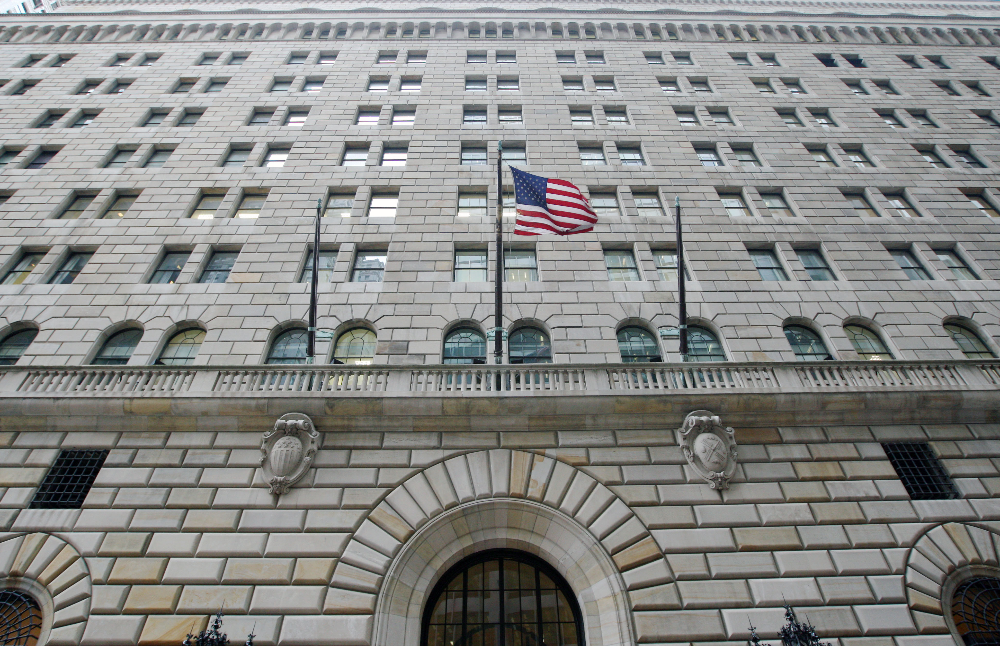
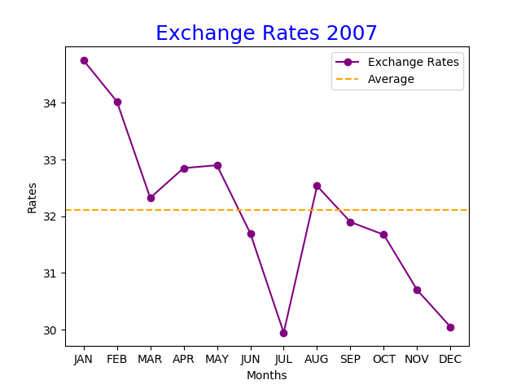
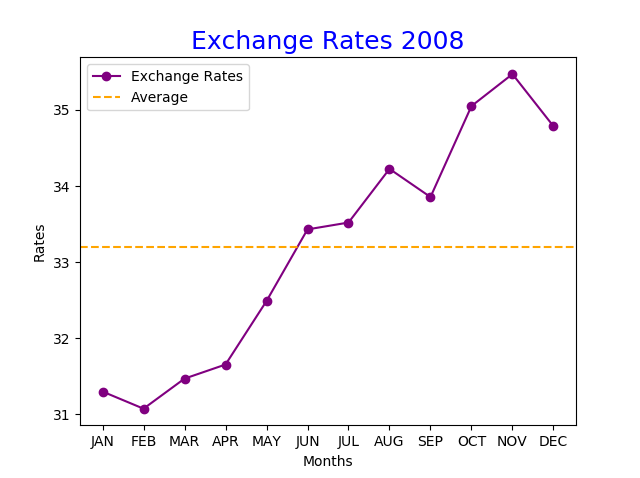
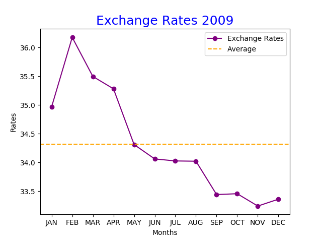

วิกฤตแฮมเบอร์เกอร์

วิกฤติแฮมเบอร์เกอร์หรือวิกฤติสินเชื่อซับไพรม์เป็นวิกฤตการเงินของสหรัฐอเมริกาที่ส่งผลกระทบไปทั่วโลก
เริ่มจากการที่ภาวะฟองสบู่แตกในตลาดอสังหาริมทรัพย์ของสหรัฐอเมริกาและการผิดชำระหนี้ของสินเชื่อซับไพรม์และสินเชื่อดอกเบี้ยลอยตัวเริ่มตั้งแต่ปี 2005-2006
และปัญหาเริ่มปรากฏชัดขึ้นในช่วงปี 2007
แล้วก็เจอปัญหาอย่างหนักในช่วงปี 2008
วิกฤตนี้นับเป็นวิกฤตการเงินที่เลวร้ายที่สุดนับตั้งแต่สิ้นสุดสงครามโลกครั้งที่ 1

จากกราฟเราจะเห็นได้ชัดเลยว่าค่าเงินบาทไทยเริ่มที่จะแข็งค่าขึ้นตั้งแต่ช่วงต้นปี 2007 แล้วก็กลับมาอ่อนค่าลงเล็กน้อยตั้งแต่ช่วงสิงหาคม 2007

แล้วเงินบาทก็กลับมาแข็งตัวเล็กน้อยอีกครั้งช่วงเดือนกันยายน 2008 ซึ่งเป็นเดือนที่ เลห์แมน บราเธอร์ส สถาบันการเงินยักษ์ใหญ่ของสหรัฐฯ
ประกาศล้มละลายในวันที่ 15 กันยายน 2008 นับตั้งแต่เดือนตุลาคม 2008 จนถึงเมษายน 2009
ค่าเงินบาทไทยก็มีความผันผวนเล็กน้อยอ่อนค่าแข็งค่าสลับกันไปมาในแต่ละเดือน

พอเข้าสู่ช่วงเดือนพฤษภาคม 2009 จนถึงช่วงปลายปี 2009
จากกราฟจะเห็นได้ชัดเจนเลยว่าเงินบาทไทยนั้นแข็งค่าขึ้นเรื่อยๆ
ซึ่งหลังจากนั้นค่าเงินบาทไทยก็ค่อยๆแข็งค่าขึ้นเรื่อยๆแล้วก็แข็งค่าอ่อนค่าสลับไปมา
ผลกระทบจากวิกฤตแฮมเบอร์เกอร์
อย่างไรก็ตามวิกฤตแฮมเบอร์เกอร์นั้นส่งผลต่อภาคการเงินของสหรัฐอเมริกากับยุโรปเป็นอย่างหนักทั้งสหรัฐอเมริกากับยุโรปเจอ
ผลกระทบจากวิกฤตนี้คือบริษัทใหญ่ๆหลาย
บริษัทเกิดการขาดทุนอย่างหนักและก็อัตราการว่างงานก็เพิ่มขึ้นอย่างเห็นได้ชัดเจนและรวมถึง GDP ที่ลดลงด้วยแต่
สำหรับภาพรวมของฝั่งเอเชียนั้นไม่ได้รับผลกระทบหนักเท่ากับสหรัฐอเมริกาและยุโรปถึงแม้ว่าในช่วงแรกๆหลายประเทศจะเจอปัญหาสภาพคล่องอัตราแลกเปลี่ยนกับค่าเงินดอลลาร์สหรัฐฯ
จนทำให้เศรษฐกิจหดตัวอย่างรุนแรงช่วงไตรมาส 3 ปี 2007 แต่ก็เริ่มกลับมามีทิศทางที่ดีขึ้นในช่วงไตรมาส 2 ปี 2008 ได้อีกครั้ง
ประเทศไทยได้รับผลกระทบขนาดไหน ?
ผลกระทบที่ประเทศไทยได้รับส่วนใหญ่เป็นผลกระทบทางอ้อมแต่วิกฤตแฮมเบอร์เกอร์ก็ทำให้การส่งออกของไทยไปยังสหรัฐฯนั้นมีการชะลอตัวลง
ส่งผลกระทบต่ออัตราดอกเบี้ยและราคาน้ำมันที่สูงขึ้นตามราคาตลาดโลกอีกด้วย